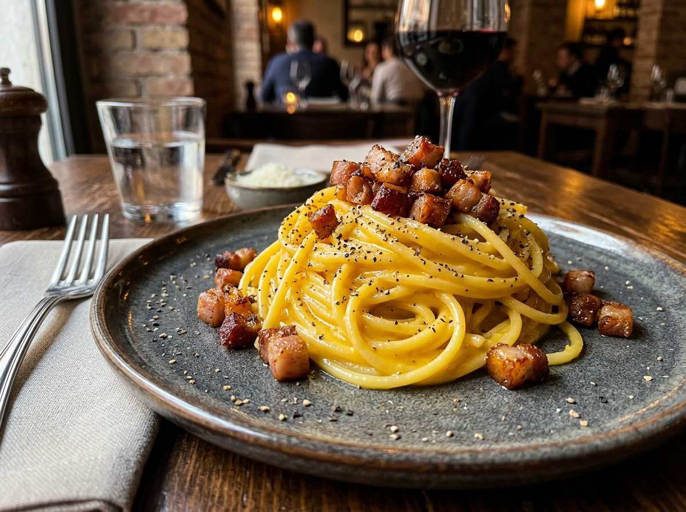

Creamy Carbonara

Description
An authentic Roman masterpiece that requires no cream whatsoever. This luscious recipe relies on the emulsion of high-quality fresh egg yolks, sharp Pecorino Romano cheese, starchy pasta water, and crispy savory guanciale (or pancetta) to create a velvety, rich, and peppery sauce.
Fast, rich, and deeply satisfying, real Roman Carbonara is a beautiful demonstration of culinary technique, where simple ingredients combine to create something truly magical.
Ingredients
- Spaghetti or Rigatoni400g
- Guanciale (or pancetta)150g
- Egg yolks4 yolks
- Whole fresh egg1 egg
- Pecorino Romano75g
- Black peppercorns1 tbsp
- Kosher salt1 tsp
Steps
-
01.
Boil Pasta
Cook pasta in boiling salted water. Remove it exactly 1 minute before it hits al dente.
-
02.
Render Pork
Heat skillet on medium-low and slowly render guanciale fat until pork is crispy and golden.
-
03.
Whisk Eggs
Whisk egg yolks, whole egg, and Pecorino Romano into a thick, uniform paste. Add pepper.
-
04.
Reserve Water
Before draining the pasta, ladle out 1 cup of hot starchy pasta water and set it aside.
-
05.
Emulsify Creamy Sauce
Coat pasta in warm rendered fat. Pour egg mixture over and toss off-heat while splashing in hot starch water until creamy.